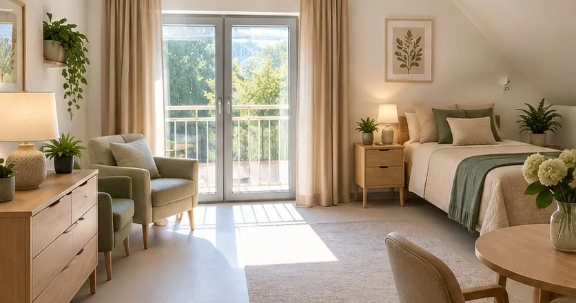
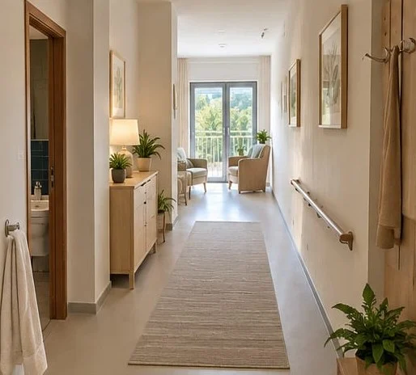
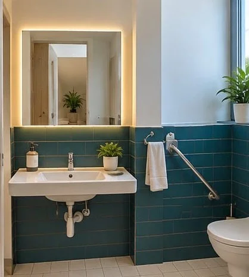
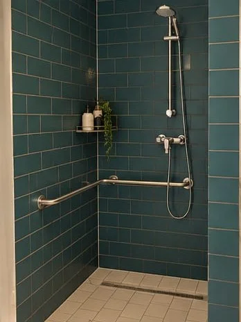
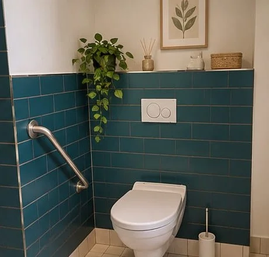

Blisko ludzi, ale na własnych zasadach
Pomarańczowy Dom i mieszkania na wynajem – własna przestrzeń, wygoda bez barier i ludzie obok, kiedy masz ochotę na towarzystwo.

Najważniejsze jest poczucie domu
„Pomarańczowy Dom” chcemy stworzyć z myślą o Seniorach, którzy nadal chcą żyć po swojemu, ale nie chcą być sami. To propozycja dla osób ceniących własną przestrzeń i niezależność, a jednocześnie chcących mieć blisko innych ludzi, wspólne miejsca i możliwość uczestniczenia w codziennym życiu społeczności.
Własny pokój lub mieszkanie ma być prywatną przestrzenią mieszkańca. To on decyduje, czy chce odpocząć u siebie, czy dołączyć do innych. Wspólny salon, kuchnia lub jadalnia, ogród czy taras mają natomiast zachęcać do spontanicznych spotkań – kawy, rozmowy, wspólnego filmu czy gry.


Jak może wyglądać codzienność?
- Spokojny poranek i wspólna kawa dla tych, którzy mają ochotę zacząć dzień razem
- Zajęcia ruchowe lub twórcze, ale bez przymusu uczestnictwa
- Czas na własne sprawy, odpoczynek, wizytę rodziny czy wyjście na spacer
- Wspólny obiad lub spotkanie przy stole, jeżeli dany wariant oferty obejmuje wyżywienie
- Popołudniowa kawiarenka, muzyka, film, planszówki lub warsztaty
- Urodziny, imieniny, święta i małe okazje celebrowane wspólnie
- Wyjścia, wycieczki i wydarzenia organizowane zgodnie z możliwościami mieszkańców
Szacunek do prywatności i samodzielności
Nie chcemy, aby życie mieszkańców było podporządkowane instytucjonalnemu rytmowi. Każdy człowiek ma swoje przyzwyczajenia, zainteresowania i potrzeby.
Dlatego idea Pomarańczowego Domu opiera się na szacunku do prywatności i samodzielności oraz na możliwości korzystania z dodatkowego wsparcia w takim zakresie, jaki rzeczywiście zostanie uzgodniony i ustalony w umowie.
Zapytaj o dostępnośćWygodnie na co dzień, spokojnie dla bliskich
Przygotowujemy ofertę wynajmu mieszkań dla Seniorów, którzy chcą mieszkać samodzielnie, we własnym rytmie, a jednocześnie w przestrzeni zaprojektowanej z myślą o wygodzie i bezpieczeństwie. Jasne, przytulne wnętrza, łazienki bez barier i przemyślane udogodnienia sprawiają, że codzienne czynności są prostsze.




Mieszkanie dopasowane do Seniora, nie odwrotnie
- Własna, prywatna przestrzeń i pełna samodzielność
- Łazienki bez progów, z poręczami i uchwytami
- Szerokie przejścia i wygodny układ pomieszczeń
- Jasne, ciepłe wnętrza sprzyjające odpoczynkowi
- Bliskość Centrum Seniora Pomarańcza – zajęcia i towarzystwo, kiedy masz na nie ochotę
Masz swoją przestrzeń, swój rytm dnia i ludzi obok, kiedy masz ochotę na towarzystwo.